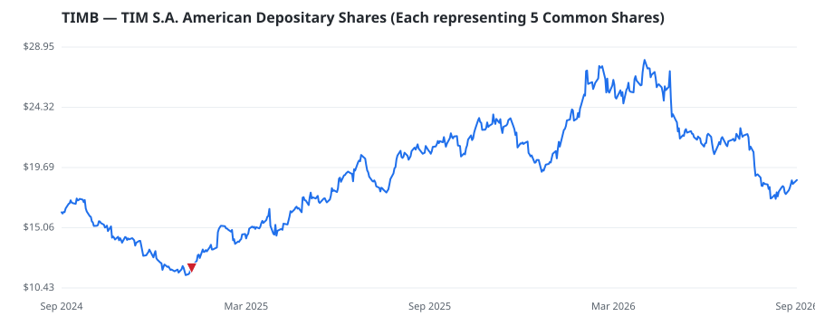

bullish · bearish · n/a — dots: price>SMA10 · SMA10>SMA50 · SMA50>SMA200 · up>down volume (20d)
Other · large cap

TIM, which is 67%-owned by Telecom Italia, is the third-largest wireless carrier in Brazil, with 62 million subscribers, equal to about 23% of the market. The firm owns 49% of I-Systems, an infrastructure partnership that is expanding its network footprint across Brazil. I-Systems can provide broadband service to about 8 million locations, including 6.5 million with fiber, equal to 10%-15% of the country. TIM leases capacity on the venture's network to serve retail broadband customers under the UltraFibra brand, but it has agreed to buy out its joint venture partner in 2026 and will take full · website